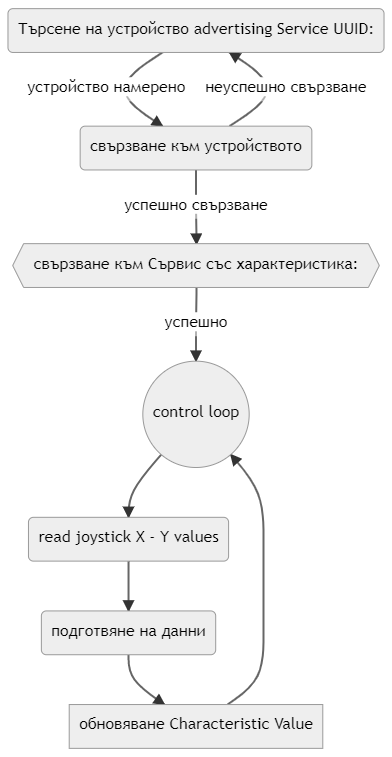

Кодът
Блокова диаграма
Опростен принцип на действие, цикъл на програмата: 
Ардуино код
Arduino Code
/**
* A BLE client that controls a SHELL Bluetooth cars.
* There is a lot new capabilities implemented.
* author unknown
* updated by B.K.
*/
extern "C" {
#include "esp_bt_main.h"
#include "esp_bt.h"
}
#include "BLEDevice.h"
//#include "BLEScan.h"
//________pin management_based_on_ESP32_101_Board
#define sw1 5
#define sw2 18
#define PAD_BTN 23
#define PAD_X 39
#define PAD_Y 36
unsigned long lastMillis = 0;
unsigned long timeToSleep = 600000; //10min*60sec = 600sec => *1000 => 600 000 milliseconds
unsigned long lastDebounceTime = 0;
unsigned long debounceTime = 250;
//_______command_____
uint8_t commando[] = {0x01, 0x00, 0x00, 0x00,
0x00, 0x00, 0x00, 0x00};
// The remote service we wish to connect to.
static BLEUUID serviceUUID("00006936-0000-1000-8000-00805f9b34fb");
// The characteristic of the remote service we are interested in.
static BLEUUID charUUID("0000fe01-0000-1000-8000-00805f9b34fb");
// The control service
static BLEUUID serviceControl("0000fff0-0000-1000-8000-00805f9b34fb");
// The control characteristic
static BLEUUID charControl("0000fff1-0000-1000-8000-00805f9b34fb");
static boolean doConnect = false;
static boolean connected = false;
static boolean doScan = false;
static BLERemoteCharacteristic* pRemoteCharacteristic;
static BLEAdvertisedDevice* myDevice;
static void notifyCallback(
BLERemoteCharacteristic* pBLERemoteCharacteristic,
uint8_t* pData,
size_t length,
bool isNotify) {
Serial.print("Notify callback for characteristic ");
Serial.print(pBLERemoteCharacteristic->getUUID().toString().c_str());
Serial.print(" of data length ");
Serial.println(length);
Serial.print("data: ");
Serial.println((char*)pData);
}
class MyClientCallback : public BLEClientCallbacks {
void onConnect(BLEClient* pclient) {
}
void onDisconnect(BLEClient* pclient) {
connected = false;
Serial.println("onDisconnect");
}
};
bool connectToServer() {
Serial.print("Forming a connection to ");
Serial.println(myDevice->getAddress().toString().c_str());
BLEClient* pClient = BLEDevice::createClient();
Serial.println(" - Created client");
pClient->setClientCallbacks(new MyClientCallback());
// Connect to the remove BLE Server.
pClient->connect(myDevice); // if you pass BLEAdvertisedDevice instead of address, it will be recognized type of peer device address (public or private)
Serial.println(" - Connected to server");
// Obtain a reference to the service we are after in the remote BLE server.
BLERemoteService* pRemoteService = pClient->getService(serviceControl);
if (pRemoteService == nullptr) {
Serial.print("Failed to find our service UUID: ");
Serial.println(serviceUUID.toString().c_str());
pClient->disconnect();
return false;
}
Serial.println(" - Found our service");
// Obtain a reference to the characteristic in the service of the remote BLE server.
pRemoteCharacteristic = pRemoteService->getCharacteristic(charControl);
if (pRemoteCharacteristic == nullptr) {
Serial.print("Failed to find our characteristic UUID: ");
Serial.println(charUUID.toString().c_str());
pClient->disconnect();
return false;
}
Serial.println(" - Found our characteristic");
// Read the value of the characteristic.
if(pRemoteCharacteristic->canRead()) {
std::string value = pRemoteCharacteristic->readValue();
Serial.print("The characteristic value was: ");
Serial.println(value.c_str());
}
if(pRemoteCharacteristic->canNotify())
pRemoteCharacteristic->registerForNotify(notifyCallback);
connected = true;
return true;
}
/**
* Scan for BLE servers and find the first one that advertises the service we are looking for.
*/
class MyAdvertisedDeviceCallbacks: public BLEAdvertisedDeviceCallbacks {
/**
* Called for each advertising BLE server.
*/
void onResult(BLEAdvertisedDevice advertisedDevice) {
Serial.print("BLE Advertised Device found: ");
Serial.println(advertisedDevice.toString().c_str());
// We have found a device, let us now see if it contains the service we are looking for.
if (advertisedDevice.haveServiceUUID() && advertisedDevice.isAdvertisingService(serviceUUID)) {
BLEDevice::getScan()->stop();
myDevice = new BLEAdvertisedDevice(advertisedDevice);
doConnect = true;
doScan = true;
} // Found our server
} // onResult
}; // MyAdvertisedDeviceCallbacks
void setup() {
pinMode(sw1,INPUT_PULLUP);
pinMode(sw2,INPUT_PULLUP);
pinMode(PAD_BTN,INPUT_PULLUP);
pinMode(PAD_X, INPUT);
pinMode(PAD_Y, INPUT);
Serial.begin(115200);
Serial.println("Starting Arduino BLE Client application...");
BLEDevice::init("");
// Retrieve a Scanner and set the callback we want to use to be informed when we
// have detected a new device. Specify that we want active scanning and start the
// scan to run for 5 seconds.
BLEScan* pBLEScan = BLEDevice::getScan();
pBLEScan->setAdvertisedDeviceCallbacks(new MyAdvertisedDeviceCallbacks());
pBLEScan->setInterval(1349);
pBLEScan->setWindow(449);
pBLEScan->setActiveScan(true);
pBLEScan->start(5, false);
} // End of setup.
void GoToSleep(){
esp_bluedroid_disable();
Serial.println("Disable bluetooth controller...");
esp_bt_controller_disable();
Serial.println("Entering deep sleep mode");
esp_deep_sleep_start();
}
void resetTimer(){
lastMillis = millis();
}
void loop() {
// If the flag "doConnect" is true then we have scanned for and found the desired
// BLE Server with which we wish to connect. Now we connect to it. Once we are
// connected we set the connected flag to be true.
if (doConnect == true) {
if (connectToServer()) {
Serial.println("We are now connected to the BLE Server.");
} else {
Serial.println("We have failed to connect to the server; there is nothin more we will do.");
}
doConnect = false;
}
// If we are connected to a peer BLE Server, update the characteristic each time we are reached
// with the current time since boot.
if (connected) {
// byte 0 = awlays 0x01
// byte 1 forward
// byte 2 backward
// byte 3 left
// byte 4 right
// byte 5 lights
// byte 6 turbo
// byte 7 380
size_t commandoLenght = sizeof(commando);
if(!digitalRead(PAD_BTN)) {
if(millis() - lastDebounceTime > debounceTime){
commando[5] ^= 1 << 0; //toggle the first bit
Serial.println(commando[5],HEX);
resetTimer();
}
lastDebounceTime = millis();
}
if(analogRead(PAD_X)<= 1600){
commando[3] = 1;
commando[4] = 0;
resetTimer();
Serial.println("turn left");
}
else commando[3] = 0;
if(analogRead(PAD_X)>= 2000){
commando[3] = 0;
commando[4] = 1;
resetTimer();
Serial.println("turn right");
}
else commando[4] = 0;
if(analogRead(PAD_Y)>= 2000){
commando[1] = 1;
commando[2] = 0;
resetTimer();
Serial.println("forward");
}
else commando[1] = 0;
if(analogRead(PAD_Y)<= 1600){
commando[1] = 0;
commando[2] = 1;
resetTimer();
Serial.println("backward");
}
else commando[2] = 0;
pRemoteCharacteristic->writeValue(commando, commandoLenght);
}else if(doScan){
BLEDevice::getScan()->start(0); // this is just example to start scan after disconnect, most likely there is better way to do it in arduino
}
if(millis() - lastMillis >= timeToSleep)
{
GoToSleep();
}
delay(50); // Delay a second between loops.
} // End of loop
void loop1 (){
Serial.print("pad_X value: ");
Serial.print(analogRead(PAD_X));
Serial.print(" pad_Y value: ");
Serial.println(analogRead(PAD_Y));
delay(1000);
}